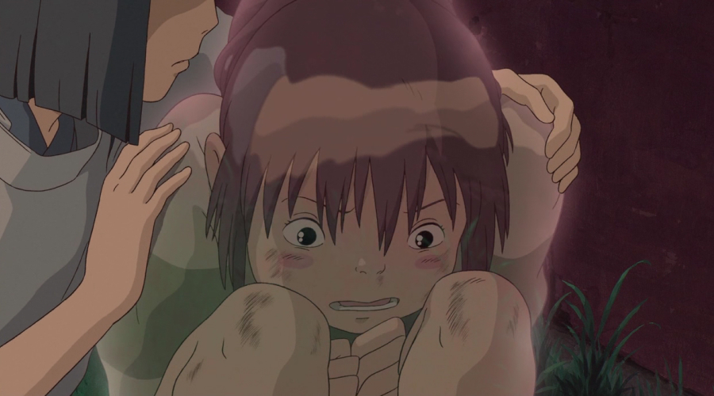
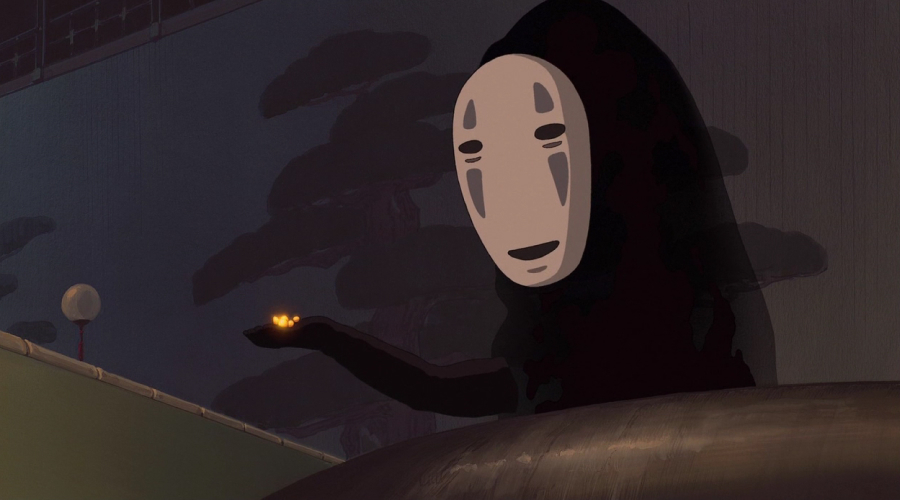

STORY
Chapter 1
어느날, 어떤 연유로 인해 시골로 이사를 가게 된 치히로의 가족. 여느 아이들과 달리 겁이 많고 소심하지만 심지 굳은 소녀 치히로는 새로운 곳에 대한 낯설음과 두고온 친구들에 대한 그리움에 의기소침해있다. 그런데 치히로의 아버지가 운전 중 길을 잘못 드는 바람에 의문의 터널 앞에 도착하고, 그 너머 신의 세계로 들어오게 된다. 부모님은 원래 목적지를 잊었는지 무언가에 홀린 듯 안으로 들어갔고, 맛있는 냄새를 풍기는 포장마차에서 허락도 구하지 않고 음식을 마구 먹는다.
치히로는 부모를 말리지만 아빠는 돈도 있고 카드도 있으니 걱정 말라고만 한다. 그 모습에 질린 치히로는 여기저기 돌아다니다가 기묘한 여관을 발견하고 다가간다. 그때 '하쿠'라는 낯선 소년이 나타나 어두워지기 전에 돌아가라고 경고하고, 여관에 불이 켜지자 "내가 시간을 벌 테니까 무조건 강으로 뛰어!" 라고 말한다. 치히로는 강으로 달려가다가 부모님을 떠올리고 음식점으로 돌아오지만 두 사람은 이미 돼지로 변해 있었고, 이를 보고 경악한 치히로는 그 자리에서 도망친다. 그 와중에 주변은 점차 밤이 되어 어두워지고 사방에서 그림자처럼 생긴 이상한 존재들이 계속 나타난다.
Chapter 2
- 
왔던 길로 돌아가려 해도 부모님과 지나온 들판은 이미 강으로 변해 있고, 이상한 존재들이 점점 더 많이 나타나자 치히로는 패닉에 빠진다. 그 와중에 몸이 투명해지기까지 하는 치히로를 하쿠가 신의 세계의 음식을 먹여 원래대로 돌려놓는다. 이후 하쿠의 도움으로 여관에 잠입하고, 온천장의 주인인 유바바와 계약을 맺고 온천장에서 일해야 부모님과 함께 원래 세계로 돌아가는 방법을 찾을 수 있다는 조언을 듣곤 하쿠와 헤어진다. 하쿠가 알려준 가마 할아범과 여직원 린의 도움으로 유바바를 찾아간 치히로는 무작정 이곳에서 일하게 해달라고 한다.
운 좋게도 떼를 쓰며 울어대는 아들 보우를 달래느라 정신이 없어진 유바바로부터 계약을 받아내는데, 이 과정에서 유바바에게 자신의 이름을 빼앗겨 '센'으로 개명된다. 직원들은 냄새 지독한 꼬맹이 인간따위가 어떻게 여기서 지내나며 받아들일수 없다 하지만, 하쿠는 이미 유바바와 계약도 했고 인간 냄새는 여기 음식을 사흘만 먹으면 되니 불평하지 말라 명령하고 그렇게 치히로는 운좋게도 마침 한동안 곁에 둘 심부름꾼 조수가 필요했다는 린의 밑으로 들어가 온천 종업원이 된다.
Chapter 3
나중에 모두가 잠든 아침 치히로는 하룻밤 사이 너무 순식간에 겪은 충격적인 실제 사건들 때문에 혼란스러워 하여 잠도 못자고 있었는데 이때 하쿠가 치히로를 불러내 돼지로 변한 부모님을 만나게 해주고, 치히로가 친구에게 받은 이별 편지를 돌려주며 이름을 되찾아준다. 치히로는 하쿠가 자신의 본명을 잊어버렸다는 것을 하쿠에게 듣게 된다. 이렇게, 종업원으로 일하게 된 첫날 밤, 폭우속에서 유바바는 수상한 기운을 느끼는데 바로 엄청난 초거대 오물신의 목욕탕으로 찾아오고 있었던 것이었다. 온갖 고약하고 더러운 초강력 악취에 오염물질로 주변의 밥까지 썩게만드는 오물신에 유바바는 이제 첫 취직한 치히로 에게 그 오물신을 시중 들라 명령한다.
이제 막 처음으로 일을 시작하여 안그래도 서툰 그녀는 오물신을 모시며 팻말을 사용해 최고급 약수를 그가 들어온 대형 욕탕에 들이붓는다. 이때 치히로는 린에게 오물신의 몸에 뭔가가 박혀 있다고 하자 유바바는 그말을 듣고 그분은 오물신이 아니라며 치히로와 린에게 밧줄을 주고는 그걸 거기에 묶으라 한뒤 온천 직원들을 전부 동원한 줄다리기로 오물신에게 쌓여 있던 온갖 오물 쓰레기더미를 죄다 빼내는데 성공한다. 사실 이 오물신은 사실 고급 강의 신이었고, 몸 속에 쌓인 쓰레기를 꺼내준 답례로 치히로에게 영험한 경단을 준다. 욕탕에서 나온 오물신은 본모습인 강의 신으로 돌아와서 껄껄 웃으며 대문을 통해 여관을 떠난다.
Chapter 4
- 
한편, 치히로가 열어준 문을 통해 여관에 침입한 가오나시는 강의 신이 남긴 사금을 종업원들이 좋아하는 걸 이용해 가짜 사금을 뿌려 종업원들을 현혹시킨다. 종업원들은 사금을 얻기 위해 가오나시에게 여관 음식을 물밀듯이 넣어주며 상전으로 모신다. 그 시각 하쿠는 유바바의 명령으로 유바바의 쌍둥이 언니인 제니바의 도장을 훔친다. 그러나 도장을 훔친 사람을 해하는 저주를 받고 종이쪼가리 떼에 쫓기고 만다. 유바바의 응접실로 향한 하쿠를 따라 치히로도 그곳으로 향한다.
응접실에는 숨이 넘어가기 직전인 하쿠가 있었고, 치히로는 제니바의 분신을 통해 하쿠가 다치게 된 경위를 알게 된다. 그러다 제니바가 뒤따라온 보우에게 한눈 팔린 사이 하쿠가 종이쪼가리를 짓이겨 분신을 제거하고 치히로와 하쿠는 굴뚝 아래로 떨어진다. 치히로는 강의 신에게 받은 경단의 반을 하쿠에게 먹인다. 쓴 경단을 먹은 하쿠는 검은색 오물 덩어리에 덮인 제니바의 도장을 뱉어낸다. 오물 덩어리는 곧 거머리 같은 벌레로 변해 도망치려했지만 치히로가 밟아버린다. 그러나 하쿠는 아직 정신을 차리지 못했고, 치히로는 하쿠를 살리기 위해 제니바에게 도장을 돌려주고 용서를 구하기로 결심한다.
Chapter 5
제니바에게 찾아가기 전 치히로는 가오나시가 벌여놓은 난장판을 수습하러 간다. 치히로의 환심을 사기 위해 가오나시는 치히로에게 사금을 건네지만, 치히로는 사금을 거절한다. 이에 가오나시가 치히로를 갖고 싶다는 삐뚤어진 욕망을 표출하자 치히로는 경단을 먹여 가오나시가 먹은 모든 걸 토해내게 한다. 다시 홀쭉해진 가오나시는 치히로를 따라오고, 치히로는 그런 가오나시를 말리지 않는다. 치히로는 기차를 타고 늪의 바다역에 내려 제니바의 집에 당도한다. 제니바는 치히로를 따뜻하게 맞이해준다. 제니바가 알려주길, 치히로가 밟아죽인 벌레는 유바바가 하쿠를 수족으로 부리기 위해 심어둔 마법의 일종이었다.
치히로가 자신이 죽인 벌레를 제니바가 건 마법으로 오해하고 사과하자 웃으며 해당 사실을 알려준다. 또한 하쿠와 가족을 구하는 것은 이 세계의 규칙에 묶여있어 치히로 본인의 힘으로 해결할 수 밖에 없다고 알려준다. 치히로는 하쿠를 오래전에 만난 것 같다고 제니바에게 말하고, 제니바는 한 번 있었던 일은 잊을 수 없다며 다행이라고 얘기한다. 보우와 파리가 물레를 돌리고 제니바는 그 실을 엮어서 치히로에게 보라색 머리끈을 선물해준다. 제니바는 치히로에게 한숨 자고 가라고 권하지만 치히로는 하쿠와 가족들이 걱정되어 바로 떠나려 한다. 마침 몸이 회복된 하쿠가 용의 모습으로 제니바의 집 밖에 마중나와 있었고 치히로는 하쿠의 등에 올라타 여관으로 향한다.
Chapter 6
다시 온천으로 날아가던 중 치히로는 하쿠의 진짜 이름을 기억해 내게 된다. 사실 하쿠는 강의 수호신이었고, 어렸을 때 물에 빠진 치히로를 구해 준 적이 있었던 것이다. 진짜 이름을 찾은 하쿠와 치히로는 기쁨의 눈물을 흘리며 서로의 소중한 이름을 되뇌인다. 하쿠와 치히로가 온천에 도착하고, 유바바는 여러 마리의 돼지 중 진짜 부모님을 찾으면 다시 원래의 인간세계로 돌려주겠다고 말한다. 치히로는 여기에는 우리 부모님이 없다고 말하고 이는 정답이었다. 치히로가 정답을 맞추자 여관 종업원들 모두 치히로를 축하해주고, 유바바는 아쉬운듯한 표정으로 치히로에게 어서 가버리라고 한다.
부모님은 이미 먼저 출발해 강 건너에 있으며, 절대 뒤돌아보지 말고 뛰라는 하쿠의 조언대로 치히로는 강건너 터널을 향해 달려간다. 드디어 터널 입구에서 치히로는 부모님을 만나지만 부모님은 아무것도 기억하지 못한다. 그러자 치히로는 뒤를 돌아보려하는데, 하쿠가 해준 조언이 떠올라 다시 앞을 보고 터널을 곧장 빠져나간다. 그렇게 다시 왔던 길로 돌아가며 터널을 다시 빠져나온 치히로 가족은 시간이 많이 흐른 것 같이 나뭇가지와 나뭇잎에 덮인 자동차를 보고 놀란다. 이때 차에 타기 전 치히로는 뭔가를 두고 온 뒤에 터널을 지그시 바라보는데 그때 그녀의 머리끈이 반짝인다. 이내 어머니의 부름에 차에 타고 숲을 빠져나가며 영화는 막을 내린다.